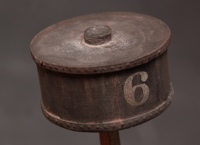

Boulder Valley Models Water Cars, #504 2-pack
Click any image for a larger view in a new browser tab.
| These cute little water cars come as a cast resin kit. This first shot shows them after a good cleaning and lightly primed in black. I also used acrylic craft paints to give a "weathered wood" base on the decks. | ||
| I started with a base of black primer, then cut vinyl masks and lightly dabbed paint through them for the markings. I didn't need complete coverage with the white, as the inconsistencies would blend nicely with the weathering. I also really like the texture of the castings, as it lends itself to a rustic look. |  | Partially weathered tanks. I used a combination of Bragdon powders applied dry and with alcohol, as well as acrylic craft paints. As you can see, I ultimately added more color and backed off the rust on #7 a bit. |
| Figuring that it wasn't uncommon 125 years ago to find illiterate men working on the railroad and in the logging camps and quarries they served, I decided top brass had the tanks color-coded with blue bands top and bottom to signify potable water. Unfortunately the paint they used doesn't hold up well to the abuse out on the road. | ||
| Like any kit build, I added a little personalization with turned brass valve fittings, hoses of solder, and .020 brass wire handles on the tank lids. The final detail I added was some blocking with NBWs to keep the tanks from "walking" off the decks on rough track. I also hollowed the tanks a little and added some brass slugs to boost their weight. I don't know if it was necessary. The Kadee #5 couplers and BVM T-1 trucks are as recommended by BVM. | ||
Unfortunately, this kit is no longer available. Boulder Valley Models closed not long after I bought mine.
Copyright 2016, Thayer Syme
All rights reserved